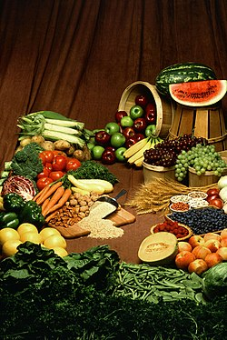

No se debe confundir con Vegetarianismo.
El veganismo (del inglés veganism)1 o vegetarianismo estricto es la abstención del uso de productos y
servicios de origen animal,234 ya sea para alimentación, vestimenta, medicamentos, cosméticos,
transporte, experimentación, ayuda en el trabajo o entretenimiento, a excepción en este último caso de
los animales de compañía. El veganismo es definido como un estilo de vida,256 como una
ideología,78910111213 y por algunos detractores como una secta.14151617 A quienes practican
el veganismo se les llama veganos,18 así como a los productos y servicios aptos para veganos.
Los fundamentos del veganismo incluyen argumentos éticos, ambientales, de salud y humanitarios, aunque
existe debate y controversia sobre la solidez de dichos argumentos.
Los principales productos y servicios excluidos en el veganismo son: carne, huevo, miel, leche y
derivados (como el queso o yogur); cuero, lana y pieles; cosméticos y medicamentos probados en animales;
y además rechazan el uso de animales en zoológicos, circos, como animales de tiro, etc.
Al igual que con cualquier dieta mal planificada, una dieta vegana desequilibrada puede provocar graves
carencias nutricionales.1920 Algunas de estas deficiencias solo se pueden prevenir con alimentos
fortificados o la ingesta regular de suplementos dietéticos o vitamínicos,202122 para lo cual es
esencial una educación y evaluación personalizada por parte de los profesionales en nutrición.192324
Una parte de los nutricionistas consideran las dietas veganas —bien planificadas— son apropiadas para
todas las etapas de la vida,1925262728293031 pero otros no las recomiendan en lactantes,3233
niños,323334 adolescentes,32 ancianos,34 embarazadas o durante la lactancia.3234
La historia del veganismo se mezcla con la del vegetarianismo. Desde la Antigüedad ha habido personas
que han renunciado al consumo de productos de origen animal, pero el término veganismo es moderno: fue
acuñado en 1944 por Donald Watson con el objetivo de diferenciarlo del vegetarianismo, el cual rechaza
el consumo de carne pero acepta el consumo de otros productos de origen animal, como leche, huevos y
queso.35 En la actualidad, el veganismo es un estilo de vida minoritario e incluso marginal, pero de
rápido crecimiento.3637

Las frutas, verduras, legumbres, nueces, granos y hongos son los elementos básicos de la comida vegana.
motivacion
Los fundamentos del veganismo son los argumentos que llevan a las personas a adoptar el veganismo. Se los
suele agrupar en cuatro categorías: argumentos éticos, ambientales, de salud y humanitarios.38 Muchos
veganos lo son por varias razones a la vez.
Los argumentos éticos provienen de un amplio rango de perspectivas.39 En general se fundan en el
rechazo
del especismo debido a la imposibilidad de encontrar diferencias morales relevantes entre animales
humanos y
no humanos. Desde el utilitarismo, el argumento básico es que adoptar el veganismo minimiza la muerte y
el
sufrimiento.40 Desde la deontología, el principal argumento es que los animales son seres sintientes y
por
lo tanto debemos tener en cuenta sus intereses.[cita requerida] En adolescentes, adoptar el veganismo
por
razones éticas puede provocar un bajo interés en el conocimiento de los aspectos nutricionales.41
Asimismo,
el veganismo no evita que se produzcan muertes y sufrimiento de animales: existe una gran sensibilidad
hacia
los animales domésticos, pero el enorme impacto negativo sobre los animales silvestres de las técnicas
agrícolas, necesarias para sustentar las dietas veganas, se vuelve «invisible» y poco
emotivo.42434445
Por otro lado, descubrimientos realizados durante los últimos años sugieren que las plantas también son
seres «sintientes», capaces de sentir estrés de manera similar a los animales y comunicarse amplia y
activamente.4647
Los argumentos ambientales apuntan al enorme impacto negativo de la ganadería y otras formas de
explotación
animal sobre el medio ambiente.[cita requerida] La mayor parte de la deforestación a nivel mundial se
debe a
la quema de árboles para hacer espacio a la ganadería.48 La ganadería es además una gran emisora de
metano
y otros gases de efecto invernadero. La sobrepesca para alimentar humanos y ganado atenta contra la
biodiversidad marina.4950 No obstante, la agricultura tiene una enorme repercusión negativa sobre la
Tierra;4451 provoca la reducción de la superficie disponible para la vida silvestre, destruye gran
número
de insectos, plantas y animales, tanto directamente en la preparación de los terrenos y mediante el uso
de
plaguicidas u otros métodos para defender los cultivos (incluyendo envenenamientos y caza a tiros), como
por
la contaminación de las aguas por los fertilizantes y los plaguicidas, y sus efectos negativos sobre la
cadena alimenticia.4942 Todo ello provoca una pérdida de biodiversidad, que no se reduce ni siquiera
en
aquellos países que valoran y protegen la naturaleza. La agricultura es también una importante fuente de
contaminación del aire y de gases que contribuyen al efecto invernadero y la lluvia ácida.51
Los argumentos de salud señalan los beneficios para la salud de adoptar una dieta vegana y los
perjuicios
para la salud de consumir productos de origen animal. Los principales beneficios son una reducción en el
riesgo de contraer enfermedad coronaria, diabetes tipo 2, hipertensión, obesidad y ciertos tipos de
cáncer.52 No obstante, los efectos beneficiosos sobre la salud no son exclusivos de la dieta vegana
sino
que también se logran con otro tipo de dietas, incluyendo la dieta mediterránea, la dieta baja en
carbohidratos / alta en proteínas y la dieta vegetariana.53 Además, el riesgo de graves deficiencias
nutricionales puede anular estos beneficios para la salud.54 Los argumentos de salud, de por sí, no
implican el rechazo de la explotación animal para vestimenta, transporte, entretenimiento, etc.
Los argumentos humanitarios enfatizan los beneficios para la humanidad de adoptar el veganismo.[cita
requerida] El principal argumento es que las dietas basadas en plantas son más sostenibles que las
dietas
ricas en productos animales, puesto que utilizan menos recursos naturales y provocan menor impacto en el
medio ambiente.52 Por lo tanto pueden ayudar a combatir la desnutrición y garantizar la seguridad
alimentaria a más personas.[cita requerida] Además, la producción y el consumo de productos de origen
animal
fueron y son la causa de diversas enfermedades zoonóticas, epidemias e incluso pandemias.555657
Productos y servicios excluidos
Hay al menos dos clases de veganismo que se pueden diferenciar: el veganismo «por dieta» o vegetarianismo
estricto, que se refiere a quienes evitan utilizar cualquier producto de origen animal como alimento —ya
sean carnes, huevos o productos lácteos— pero sí los usan en la ropa y aseo personal, 107 y el
veganismo «ético», quienes ven al veganismo como una filosofía, rechazan la comercialización de animales
—por ende su condición de mercancía— además de evitar usarlos como comida también rechazan su uso para
cualquier otro propósito, sea indumentaria, entretenimiento u otros.107
En la medida de lo posible y práctico, la británica Sociedad Vegana solo certifica productos que no
fueron elaborados con materiales de origen animal o por animales, incluyendo aquellos que han sido
probados en animales.108109110 Los productos de origen animal incluyen: todo tipo de carnes, huevos,
productos lácteos, miel y cera de abejas; pieles, cuero, lana, seda, plumas o cualquier producto que
contenga derivados de la grasa animal. También productos menos conocidos como: carbón animal, porcelana
de ceniza de hueso, carmín de cochinilla, caseína, gelatina, cola de pescado, lanolina, cuajo, goma
laca, sebo, suero de leche. Existen también otros ingredientes aún menos conocidos que no pueden ser
detectados en las etiquetas de ingredientes
Vendedor de alimentos veganos, Cameron Antiques Fair, octubre de 2019.
alimentos
La práctica del veganismo excluye consumir carnes de todo tipo, de cualquier tipo de animal, ya sean
vacas, cerdos, pollos, pescados o cualquier otro. También excluye el consumo de huevos, ya que considera
que las formas de producción comunes, tanto en jaulas como en corrales, provocan sufrimiento en los
animales y su muerte prematura, además de que la mayoría de pollitos macho son sacrificados porque al no
producir huevos su manutención no es rentable.113 De manera similar sucede con los productos lácteos,
como leches, quesos y yogures: en la producción de leche, las vacas son inseminadas artificialmente en
repetidas ocasiones para lograr varios periodos de lactancia. Los terneros también son sacrificados al
nacer o enviados para la producción de productos cárnicos, tanto de carne de ternera como de novillo.
Las terneras son separadas de sus madres en un lapso de entre uno y dos días después de su nacimiento
para reservar su leche para consumo humano, y son alimentadas con sustitutos lácteos.114 Al alcanzar
una edad aproximada de cinco años, las vacas son sacrificadas y su carne es molida para la elaboración
de cárnicos, cuando pueden alcanzar a vivir veinte años de edad o más.115116117 Algo similar ocurre
con las cabras y sus crías.118
En cuanto a los productos elaborados por insectos, como la miel o la seda, existen desacuerdos entre
diferentes corrientes del veganismo. Gran número de veganos considera que la apicultura moderna es cruel
y explotadora, ya que después de que la miel es recolectada es sustituida con azúcar o con jarabe de
maíz para mantener la cohesión de la colmena.119 Ni la Sociedad Vegana británica ni la de Estados
Unidos consideran que la miel, la seda u otros productos de insectos sean aptos para los veganos,
mientras que la Vegan Action y la Vegan Outreach consideran que su uso es una cuestión de elección
personal.120121122123124 La miel de ágave es una alternativa popular entre los veganos a la miel de
abeja.

Las carnes, huevos y lácteos como la leche y el queso son los principales alimentos excluidos de la
dieta vegana.
indumentaria
La práctica del veganismo que excede a la mera observación dietaria rechaza comprar o usar prendas con
pieles, cuero, lana, plumas o cualquier otro material de origen animal. Algunas prendas de vestir «aptas
para veganos», particularmente las elaboradas con sucedáneos de cuero, están hechas de productos a base
de petróleo. Esto ha provocado críticas, debido a los daños asociados a su producción
Medicamentos y suplementos dietéticos
Los veganos éticos tratan de no utilizar ningún producto de origen animal y tratan de evitar aquellos
probados en animales. También evitan ciertas vacunas,127 como por ejemplo la vacuna contra la gripe, en
cuyo proceso de fabricación se utilizan huevos de gallina.128
La Sociedad Vegana reconoce que «no siempre es posible hacer una elección que evite el uso de
animales».129 Un importante problema es el caso de los medicamentos, que son rutinariamente probados en
animales para asegurar que son eficaces y seguros, y también pueden contener ingredientes animales, como
la lactosa, la gelatina o los estearatos.129130 Para que los medicamentos sean aprobados, la
Administración de Alimentos y Medicamentos de los Estados Unidos (FDA por sus siglas en inglés) exige
que el fabricante o patrocinador realice una serie de pasos que incluyen primero estudios en laboratorio
y con animales, previos a los ensayos clínicos con humanos.130 Puede no haber alternativas a la
medicación prescrita o estas alternativas pueden ser inadecuadas, menos eficaces o provocar más efectos
secundarios adversos.129
La experimentación con animales también se lleva empleando desde hace muchas décadas para comprender las
funciones básicas de los micronutrientes y la elaboración de suplementos dietéticos, como los que se
precisan para evitar ciertas deficiencias en las personas que siguen dietas vegetarianas, y calcular sus
dosificaciones.131132133 Asimismo, la experimentación con animales de laboratorio se utiliza para
evaluar la inocuidad de las vacunas, aditivos alimentarios, cosméticos, productos para el hogar,
sustancias químicas en el lugar de trabajo y muchas otras sustancias.134
La Comisión Europea «subraya que la experimentación con animales sigue siendo importante para proteger
la salud de los seres humanos y los animales y para mantener un medio ambiente intacto».135 Como señala
la Confederación de Sociedades Científicas de España (COSCE) «Prácticamente todos los protocolos
actuales para la prevención, curación y control de las enfermedades, de los antibióticos a las
transfusiones de sangre, de la diálisis al trasplante de órganos, de las vacunas a la quimioterapia, de
las operaciones quirúrgicas de corazón a la sustitución de huesos y articulaciones en cirugía
ortopédica, se basan en el conocimiento obtenido mediante investigaciones realizadas en animales de
laboratorio»
cosmeticos
Los criterios de la Sociedad Británica Vegana para certificar un producto son que sus ingredientes no
contengan ningún elemento de origen animal y que tanto el producto terminado como sus componentes no
hayan sido probados en animales, ya sea directamente por el fabricante, o por alguien en su nombre.137
Los ingredientes de origen animal son más baratos, por lo que son omnipresentes en los artículos de
tocador. En especial el sebo que es muy utilizado para la elaboración de cosméticos y artículos de
tocador. Por lo general los veganos revisan la lista de composición de los productos, para comprobar que
ningún producto de origen animal haya sido usado en su elaboración.138139
Los más comunes son: el sebo para la elaboración de jabones, la glicerina (un derivado del colágeno) que
es usada como lubricante y humectante en productos para el cabello, cremas hidratantes, cremas de
afeitar, jabones y pastas de dientes; existe una glicerina de origen vegetal pero la más usada es la de
origen animal. La lanolina es extraída de la lana de oveja, es otro ingrediente común que puede
encontrarse en bálsamos labiales y cremas hidratantes. El ácido esteárico también puede ser de origen
vegetal, es utilizado en la elaboración de cremas para el rostro, espumas de afeitar y champús. Los
fabricantes prefieren utilizar el ácido esteárico de origen animal. El ácido láctico es un ácido
carboxílico con un grupo hidroxilo, derivado de la leche, y la alantoína que se encuentra en la orina de
muchos animales y en la planta consuelda; son utilizados para la elaboración de champús, cremas
hidratantes y pastas de dientes